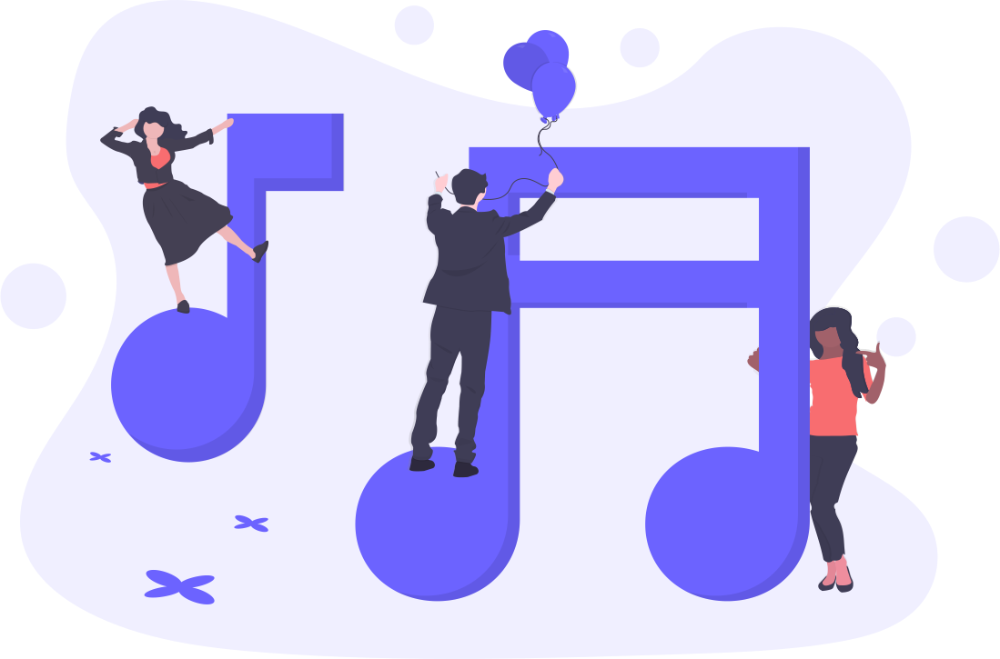

Ezgi Esra Akdağ
-

- 
- 
-


Merhaba isminiz nedir?
Ezgi Esra Akdağ
Bize biraz kendinden bahseder misin?
Uluslararası Kıbrıs Üniversitesi Endüstri Mühendisliği 2019 mezunuyum. Öğrencilik hayatım boyunca geçimi mi sağlayabilmek için barlarda bartender olarak çalıştım. Çok uzun zamandır da dereboyunda bir restorantta bartender olarak çalışmaktayım. Açıkcası bar işine hep geçici bir iş olarak baktım günün sonunda endüstri mühendisliğine dönüş yapacağımı düşünüyordum. Pandemi işin içine girince herkes gibi benimde düşünecek ve araştıracak çok vaktim oldu. Endüstri mühendisi olarak bulduğum işlerin beni tatmin etmeyeceğini farkettim. Barda çalışmayı ne kadar çok sevsemde hayatımı olumlu bir şekilde değiştirmek istedim. Yaşam kalitemi yükseltmek istedim. ‘Barın içinde kokteyl yapan kişi değil dışındaki muhteşem kokteylleri yudumlayan kişi olmak istiyorum.’ tüm motivasyonum ve araştırma geçişim bu cümleyi kendime kurunca başladı diyebilirim.
Kurs sonrası planlarınız neler? Şimdiye kadar gerçekleşen oldu mu?
Kurs sonrası aldığım eğitimi pekiştirmek, yazılım alanında tecrübe kazanmak ve frontend alanında kendimi geliştirmek için staja başladım. Cyprus Codes ekibinin ve yanında stajda olduğum developer'ın desteği ile planlarımı gerçekleştireceğime eminim. Uzun vadeli planlar yapmakdan kaçındım açıkcası bununda sebebi şuan kesinlikle kendime yönelmiş olmam , eksik ve yetersiz gördüğüm alanları güçlendirmek. Cyprus Codes bünyesinde aldığımız eğitim bizleri sıfırdan junior developer seviyesine getirmek için koca bir adımdı diye düşünüyorum. Ama öğrenmeye/gelişmeye devam etmezsek koca bir ekibin emeği boşa gitmiş olur.
Piyasadaki diğer kurslar yerine (veya online kurslar yerine) Cyprus Codes'u seçme sebebiniz neydi?
Pandemiden dolayı dışarı çıkma yasağının olduğu dönem bir çok online kurs / youtube/ udemy gibi platformlardan yararlanarak yol bulmaya çalıştım. Ama 101 seviyesini geçemedim. Müfredatın önemini de bu dönemde farkettim. Çünkü nerden başlayıp nereye gideceğimi kestiremiyordum. Cyprus Codes i seçme sebeplerimden birincisi Manchester Codes bünyesinde müfredatın denenip kanıtlanmış olması ve söz konusu müfredat ile gerçek hayatta başarı yakalamış olmaları tabi ki. Bir diğeri de ekip işi olması. Kendi kendime öğrenmeye çalıştığım zamanlar bazen sebepsiz yere çalışmayı bırakırdım ve tekrar bilgisayar başına geçmem uzun zaman alırdı. Kurs içinde bazen bahane bulup çalışmak istemezsen bile pek mümkün olmuyor gerek eğitimciler olsun gerek kurstan arkadaşlar hemen sizi kendinize getirip tam destek olarak devam ettiriyorlar ve bu benim çok hoşuma gitti. İnsan çok istesede bazen kendine motivasyon sağlayamıyor o yüzden ekip işi olması çok işe yarıyor.
Cyprus Codes Fastrack Full Stack Developer kursunda sizi en çok mutlu eden şey neydi?
Doğru yönlendirme ile bu işi yapabileceğimi anladığım andı sanırım. Bu aynı zamanda kursa ayırdığım zamanımı ve paramı boşa harcamadığımı anladığım andı yani benim gibi asgari ücret kazanan biri için en önemli şey.
Kurs boyunca en zorlandığınız şey ne oldu?
Kurs boyunca beni zorlayan şey dökümanların ingilizce olmasıydı. Orta derece ingilizcem var sanıyordum meğerse yokmuş. Ama bu beni yıldırmadı kod yazmayı öğrenirken ingilizcemi de geliştirmiş oldum.
Kurs ile sosyal yaşantınızdaki sorumluluklarınızın dengesini nasıl kurdunuz?
Kurs saatleri çalışan bireylere uygun olarak ayarlanılmış fakat ben barda çalıştığım için iş saatlerim uymuyordu. Bunun için biraz fedakarlık yapmak zorunda kaldım. İşverenimle konuşup ona göre ayarladık saatlerimi kendisi her konuda bana destek oldu.
Kurstaki deneyiminiz hakkında eklemek istediğiniz başka bir şey var mı?
Kursun müfredatı gerçekten iş hayatında en çok istenilen dilleri ve teknolojileri içerecek şekilde hazırlanmış bundan dolayı staj arayışımda hiç zorlanmadım benden bilmemi istedikleri herşeyi kursta zaten öğrenmiştim. İletişim platformumuz olan Slack üzerinden tüm kursiyerler ve eğitmenler ile iletişim içindeyiz. Kurs bitti herkes kendi yoluna gibi bir durum olmadı. Bütün ekip kurs bitmesine rağmen fikir alışverişine ve gelişmemize yardımcı olmaya devam ediyorlar.
Şu anda kursa katılacak olan kişilere ne gibi tavsiyelerde bulunursunuz?
Ders kaçırmamaya özen göstersinler. Aksi bir durum olurda kaçırırlarsa mutlaka kayıtlı dersi izlesinler. Verilen görevleri zamanında tamamlasinlar sonra başa bela oluyor. Benim ve bir çok kurs arkadaşımın yaptığı yanlislardan biri utanmak çekinmek ve soru sormamakti. Bilgisiz gibi görünmekten korkmayin. Unutmayın ki kimse hobi olsun diye böyle bir kursu satın almıyor. Herkes birşeyler öğrenmeye geldi. Kurs müfredati hiç bir deneyimi olmayıp sıfırdan kariyer hedeflerini değiştirmek isteyen bireyler için hazırlanmış biraz ingilizce ve vereceğiniz emek ile bu müfredattan eliniz boş ayrilmayacaginizi söyleyebilirim.
Next - Berke Batman